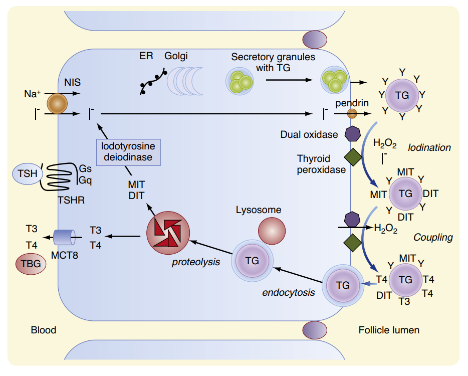
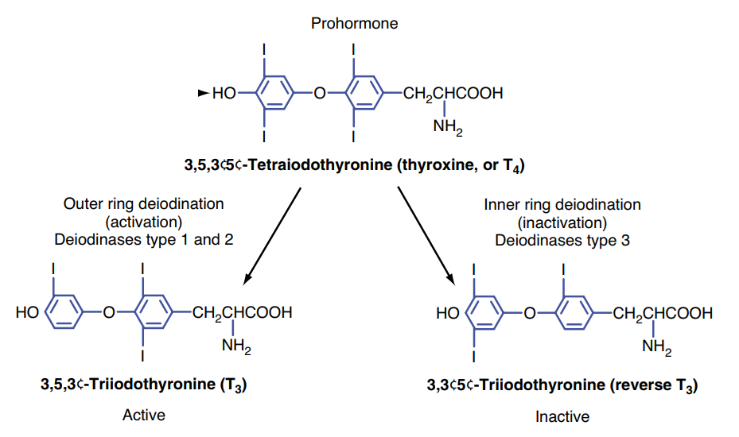
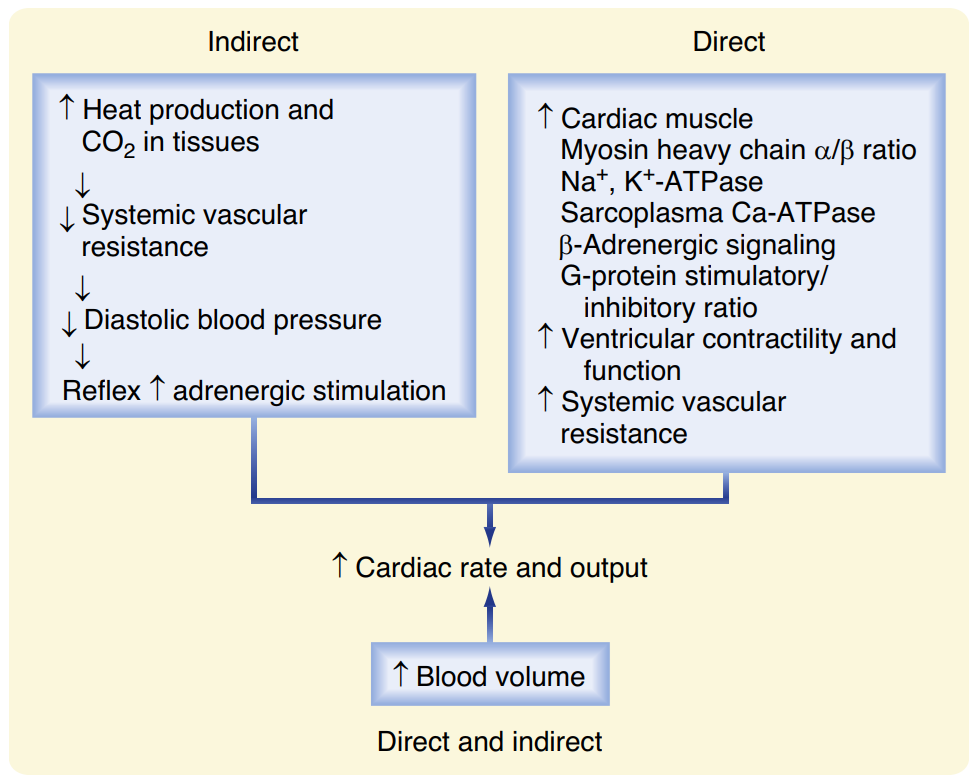
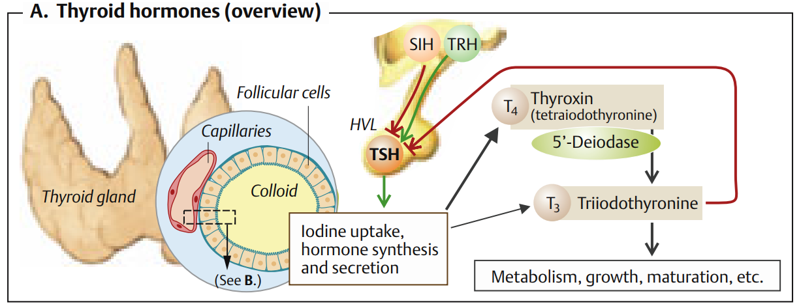

Sinh lý học Tuyến giáp
Hệ thống hóa cấu trúc giải phẫu - mô học nang giáp, chu trình sinh tổng hợp và giải phóng hormon, các cơ chế tác động tại tế bào đích, tác dụng sinh lý và trục điều hòa ngược.
Tuyến giáp (thyroid gland) là tuyến nội tiết lớn nhất trong cơ thể con người, nằm ở phía trước cổ, ngay dưới thanh quản. Tuyến giáp nhận lượng máu nuôi dưỡng vô cùng phong phú (chiếm khoảng 1% cung lượng tim), đảm bảo việc cung cấp liên tục nguyên liệu (iod) và phân phối nhanh chóng các hormon giáp là Triiodothyronine ($T_3$) và Thyroxine ($T_4$) tới mọi mô đích trong cơ thể, thiết lập mức chuyển hóa cơ bản cho toàn bộ hệ thống sống.
Phần I: Cấu trúc Giải phẫu và Mô học của Tuyến Giáp
Về mặt đại thể, tuyến giáp gồm hai thùy (thùy phải và thùy trái) nối với nhau qua một eo giáp hẹp. Ở mức độ vi thể, đơn vị chức năng và cấu trúc cơ bản của tuyến giáp là các nang giáp (thyroid follicles). Cấu trúc mô học của một nang giáp bao gồm ba thành phần cốt lõi:
Là lớp tế bào đơn (follicular cells) bao bọc xung quanh nang giáp. Tế bào biểu mô có hình lập phương (cuboid) ở trạng thái bình thường hoặc hình trụ cao (columnar) khi hoạt động mạnh dưới sự kích thích của TSH. Chúng có nhiệm vụ tổng hợp thyroglobulin và vận chuyển chủ động các ion iod.
Lòng nang giáp chứa đầy chất keo màu hồng khi nhuộm H&E, thành phần chính là glycoprotein thyroglobulin (Tg). Thyroglobulin do tế bào nang giáp chế tiết, đóng vai trò là một "kho dự trữ" khổng lồ của các hormon giáp đã được tổng hợp, đủ cung cấp cho cơ thể trong 2 đến 3 tháng.
Nằm xen kẽ giữa các nang giáp ở vùng mô liên kết kẽ là các tế bào C (parafollicular cells). Các tế bào này có nguồn gốc từ mào thần kinh, chịu trách nhiệm bài tiết hormon peptide calcitonin, tham gia điều hòa giảm nồng độ canxi huyết tương (đối kháng với PTH).

Phần II: Sinh tổng hợp, Dự trữ và Bài tiết Hormon Giáp
Tuyến giáp tổng hợp hai hormon iodothyronine chính: Thyroxine ($T_4$) và Triiodothyronine ($T_3$). Khoảng 90% lượng hormon giải phóng từ tuyến giáp là $T_4$ (dạng tiền hormon hoạt tính yếu), 10% là $T_3$ (dạng hoạt tính mạnh gấp 3-4 lần). Quá trình sinh tổng hợp hormon diễn ra qua chuỗi 6 bước nối tiếp chặt chẽ:
-
Bước 1: Bắt giữ Iodide (Iodide Trapping)
Iodide ($I^-$) từ máu được tế bào biểu mô bắt giữ chủ động qua màng đáy nhờ kênh đồng vận chuyển NIS (Sodium-Iodide Symporter). Quá trình này đồng vận chuyển $2Na^+$ cùng $1I^-$ vào trong tế bào, sử dụng năng lượng gián tiếp từ bơm $Na^+,K^+$-ATPase màng đáy. Nó giúp tích tụ $I^-$ nội bào cao gấp 30-250 lần nồng độ trong máu.
-
Bước 2: Vận chuyển Iodide ra màng đỉnh (Iodide Efflux)
Ion $I^-$ di chuyển xuyên qua bào tương đến màng đỉnh. Tại đây, $I^-$ được vận chuyển thụ động vào lòng nang chứa chất keo thông qua kênh trao đổi anion $I^-/Cl^-$ chuyên biệt có tên là Pendrin.
-
Bước 3: Tổng hợp và xuất bào Thyroglobulin (Tg)
Song song đó, tế bào nang giáp tổng hợp chuỗi polypeptide lớn **Thyroglobulin (Tg)** chứa nhiều gốc acid amin tyrosine tại lưới nội chất hạt, glycosyl hóa tại phức hợp Golgi, rồi đóng gói vào túi tiết và xuất bào vào lòng nang.
-
Bước 4: Oxy hóa và Iod hóa Tyrosine (Organification)
Tại ranh giới màng đỉnh - chất keo, enzyme **TPO (Thyroid Peroxidase)** cùng với phân tử hỗ trợ $H_2O_2$ (tạo ra từ enzyme DUOX2) tiến hành oxy hóa nhanh chóng $I^-$ thành dạng hoạt động ($I^0$ hoặc $I_2$). Dạng hoạt động này lập tức gắn vào vị trí 3 và 5 của nhân tyrosine trên phân tử Thyroglobulin để tạo ra:
• Monoiodotyrosine (MIT) (gắn 1 iod).
• Diiodotyrosine (DIT) (gắn 2 iod). -
Bước 5: Phản ứng Ghép cặp (Coupling Reaction)
Tiếp tục dưới sự xúc tác của enzyme **TPO**, các gốc tyrosine đã iod hóa trên cùng một phân tử Tg được ghép cặp với nhau:
• $\text{DIT} + \text{DIT} \rightarrow \text{Thyroxine } (T_4)$ (chiếm đa số).
• $\text{MIT} + \text{DIT} \rightarrow \text{Triiodothyronine } (T_3)$.
Hormon hoàn chỉnh được dự trữ trong lòng nang giáp dưới dạng gắn chặt với thyroglobulin trong khối chất keo. -
Bước 6: Ẩm bào chất keo và Bài tiết hormon
Khi có kích thích từ hormon TSH, màng đỉnh tế bào nang giáp co bóp hình thành giả túc ẩm bào (endocytosis) các giọt chất keo chứa Tg trở lại tế bào. Các túi ẩm bào này hòa màng với **lysosome**. Enzyme protease trong lysosome thủy phân phân cắt thyroglobulin, giải phóng $T_3, T_4$ tự do. Chúng khuếch tán qua màng đáy vào tuần hoàn máu. Các gốc MIT và DIT dư thừa được khử iod ngay tại chỗ bởi men *iodotyrosine deiodinase* để tái sử dụng iod tự do.

Phần III: Vận chuyển và Chuyển hóa Hormon ở Ngoại biên
Sau khi được bài tiết vào dòng máu, hormon giáp được vận chuyển và chuyển hóa phức tạp tại các mô đích ngoại biên:
- Trạng thái vận chuyển: Do có cấu trúc kỵ nước cao, >99.9% $T_4$ và >99.7% $T_3$ lưu hành dưới dạng gắn kết với các protein huyết tương. Protein vận chuyển chủ yếu là TBG (Thyroxine-Binding Globulin) chiếm khoảng 70% lượng hormon gắn kết, phần còn lại liên kết với Transthyretin (TTR) và Albumin. Chỉ có phần rất nhỏ dạng tự do ($\text{fT}_3$ và $\text{fT}_4$) mới có khả năng đi qua màng tế bào vào mô đích và thực hiện chức năng sinh học cũng như cơ chế điều hòa ngược (feedback).
- Chuyển hóa ngoại biên (Khử Iod): Tại các mô đích, $T_4$ đóng vai trò như một tiền hormon (prohormone). Nó được khử một nguyên tử iod ở vòng ngoài bởi enzyme **$5'$-deiodinase (Type 1 và Type 2)** để chuyển thành $T_3$ có hoạt tính sinh học mạnh mẽ. Ngược lại, enzyme **Type 3 deiodinase (D3)** sẽ khử iod ở vòng trong để chuyển $T_4$ thành **reverse $T_3$ ($rT_3$)** - một đồng phân hoàn toàn bất hoạt sinh học. Đây là cơ chế bảo vệ quan trọng giúp điều hòa hoạt tính hormon theo nhu cầu năng lượng (ví dụ: cơ thể tăng tạo $rT_3$ bất hoạt khi đói nghèo, stress nặng hoặc bệnh cấp tính).

Phần IV: Cơ Chế Tác Động Tại Mô Đích
Để đi vào tế bào đích, hormon giáp tự do cần được vận chuyển chủ động qua màng tế bào bởi các protein mang đặc hiệu (như MCT8 hoặc OATP1C1). Khi đã ở trong bào tương, hormon thực hiện tác động qua hai con đường chính:
Đây là cơ chế cổ điển và chủ yếu, diễn ra chậm (sau vài giờ đến vài ngày). $T_3$ đi vào nhân tế bào và gắn vào thụ thể nhân **TR (Thyroid Hormone Receptor)**. Thụ thể TR tạo phức hợp dị dimer (heterodimer) với thụ thể **RXR** (Retinoid X Receptor). Phức hợp này liên kết trực tiếp vào vùng **TRE (Thyroid Response Element)** trên chuỗi DNA của gen đích, điều hòa quá trình phiên mã tạo mRNA và dịch mã tổng hợp các protein mới (như bơm $Na^+,K^+$-ATPase, enzyme hô hấp ty thể, thụ thể $\beta$-adrenergic, myosin chuỗi nặng $\alpha$).
Xảy ra nhanh chóng trong vòng vài phút. Hormon giáp tương tác với các thụ thể trên màng tế bào (ví dụ thụ thể integrin $\alpha_V\beta_3$), trong bào tương hoặc ty thể. Con đường này kích hoạt các con đường truyền tin thứ hai (như MAPK, PI3K/Akt) để làm thay đổi tức thì hoạt tính của các kênh ion, tăng dòng canxi nội bào, thúc đẩy sinh nhiệt tại ty thể hoặc kích hoạt quá trình sinh mạch máu mới.
Phần V: Tác Dụng Sinh Lý Của Hormon Giáp
Hormon giáp tác động lên hầu hết mọi tế bào trong cơ thể, thiết lập mức độ chuyển hóa cơ bản (Basal Metabolic Rate - BMR) và điều hòa sự phát triển thể chất cũng như tinh thần:
| Hệ Cơ Quan | Cơ Chế và Tác Dụng Sinh Lý Cốt Lõi | Biểu Hiện Cường Giáp / Suy Giáp |
|---|---|---|
| Chuyển hóa năng lượng & Sinh nhiệt |
• Tăng tiêu thụ oxy ($O_2$) và BMR ở hầu hết các mô (ngoại trừ não,
lách, tinh hoàn). • Tăng số lượng, kích thước và hoạt động ty thể. • Tăng biểu hiện bơm $Na^+,K^+$-ATPase. • Tăng tổng hợp protein **UCP1 (Thermogenin)** ở mô mỡ nâu gây rò rỉ proton qua màng ty thể để giải phóng năng lượng dưới dạng nhiệt thay vì ATP. |
• Cường giáp: Sợ nóng, da ấm ẩm, sụt cân dù ăn
nhiều. • Suy giáp: Sợ lạnh, da khô ráp, tăng cân nhẹ. |
| Chuyển hóa chất (Glucid, Lipid, Protid) |
• Tăng hấp thu glucose ở ruột, tăng tân tạo glucose và phân giải
glycogen ở gan. • Kích thích ly giải mỡ (lipolysis), giải phóng acid béo tự do. • Giảm cholesterol máu: Tăng tổng hợp thụ thể LDL tại gan để dọn dẹp LDL-C khỏi tuần hoàn. • Tăng cả tổng hợp và phân giải protein (ưu tiên phân giải ở nồng độ cao). |
• Cường giáp: Tăng đường huyết nhẹ, giảm cholesterol
máu, yếu cơ teo cơ do dị hóa protid. • Suy giáp: Tăng cholesterol máu, phù niêm (myxedema) do tích tụ glycosaminoglycan. |
| Hệ Tim mạch |
• **Tăng số lượng thụ thể $\beta_1$-adrenergic** trên cơ tim, làm tim
nhạy cảm mạnh với catecholamine. • Tăng biểu hiện chuỗi nặng myosin-$\alpha$ và bơm SERCA2a ở lưới nội chất cơ tim $\rightarrow$ tăng sức co bóp cơ tim và tần số tim. • Giãn mạch ngoại vi do tăng sinh nhiệt và chuyển hóa mô giải phóng chất giãn mạch ($CO_2$, acid lactic) $\rightarrow$ giảm sức cản hệ thống, tăng mạnh cung lượng tim (Cardiac Output). |
• Cường giáp: Nhịp tim nhanh, đánh trống ngực, tăng
huyết áp tâm thu, huyết áp hiệu số rộng, nguy cơ rung nhĩ. • Suy giáp: Nhịp tim chậm, giảm cung lượng tim, huyết áp tâm trương tăng nhẹ do co mạch ngoại vi bù trừ. |
| Hệ Thần kinh & Tăng trưởng |
• Ở bào thai & sơ sinh: Tuyệt đối cần thiết cho sự phát
triển não bộ (thúc đẩy phân nhánh sợi gai, synap hóa, myelin hóa sợi
thần kinh). • Ở người lớn: Duy trì tính hưng phấn của hệ thần kinh trung ương và tốc độ phản xạ của cung phản xạ tủy xương. • Phát triển xương: Tác động hiệp đồng với GH (Growth Hormone) và các IGF để thúc đẩy sự phát triển của sụn đầu xương, hóa cốt xương giúp tăng chiều cao. |
• Sơ sinh thiếu giáp: Bệnh đần độn bẩm sinh (Cretinism)
kèm lùn không cân đối. • Người lớn: - Cường giáp: Lo âu, mất ngủ, run tay tần số cao. - Suy giáp: Chậm chạp, ngủ gà, suy giảm trí nhớ, phản xạ gân gót chậm. |

Phần VI: Điều Hòa Bài Tiết Hormon Giáp
Hoạt động bài tiết của tuyến giáp được kiểm soát nghiêm ngặt bởi cơ chế trục thần kinh - nội tiết và sự tự điều hòa tại chỗ bởi iod:
1. Trục điều hòa Hạ đồi - Tuyến yên - Tuyến giáp (HPT Axis)
• Hạ đồi tiết TRH (Thyrotropin-Releasing Hormone): TRH được bài tiết
vào hệ mạch cửa hạ đồi-yên, gắn vào thụ thể trên tế bào hướng giáp ở tuyến yên trước,
kích hoạt con đường phospholipase C ($IP_3/DAG$) để kích thích bài tiết **TSH**.
• Tuyến yên trước tiết TSH (Thyroid-Stimulating Hormone): TSH gắn
vào thụ thể liên kết protein $G_s$ trên tế bào biểu mô nang giáp, làm tăng nồng độ chất
truyền tin thứ hai **cAMP** và hoạt hóa protein kinase A (PKA). TSH kích thích **tất cả
các bước** trong chu trình tổng hợp và giải phóng hormon (tăng hoạt động NIS, tăng ẩm
bào Tg, phì đại tế bào giáp). TSH kích thích kéo dài sẽ dẫn đến phì đại tuyến giáp (gây
bướu cổ).
• Điều hòa ngược âm tính (Negative Feedback): fT3 và fT4 tự do
trong máu tăng cao sẽ tác động ngược lên tuyến yên trước để làm giảm mật độ thụ thể TRH
và giảm phiên mã chuỗi TSH, đồng thời ức chế vùng hạ đồi giảm tiết TRH, nhằm duy trì
nồng độ hormon ổn định trong máu.
2. Sự tự điều hòa tại chỗ bằng Iod (Autoregulation)
Tuyến giáp có khả năng độc đáo tự điều chỉnh chức năng của mình để thích ứng với lượng iod nạp vào:
- Hiệu ứng Wolff-Chaikoff (Ức chế do thừa iod cấp): Khi lượng iod trong tuần hoàn tăng đột ngột lên mức rất cao, nồng độ iodide hữu cơ nội bào tăng vượt ngưỡng sẽ tự động ức chế enzyme TPO và giảm biểu hiện của bơm NIS. Quá trình này làm ngừng trệ tạm thời sự iod hóa thyroglobulin, giảm tổng hợp $T_3, T_4$ nhằm bảo vệ cơ thể khỏi cơn bão giáp nhiễm độc. Tuy nhiên, sau 1-2 tuần, tuyến giáp sẽ thực hiện hiện tượng "thoát ức chế" (escape) bằng cách giảm bắt giữ iod qua NIS để nồng độ iod nội bào giảm xuống bình thường.
- Hiệu ứng Jod-Basedow (Cường giáp do iod): Xảy ra ở những người có bướu cổ phình giáp cũ hoặc nhân độc tuyến giáp ẩn nấp, khi được bổ sung một lượng lớn iod, tuyến giáp mất khả năng tự điều hòa Wolff-Chaikoff sẽ sử dụng lượng iod này làm nguyên liệu sản xuất ồ ạt $T_3, T_4$, dẫn đến bùng phát bệnh cảnh nhiễm độc giáp cấp tính.

Phần VII: Highlight Lâm Sàng (High-Yield Clinical Correlation)
Các rối loạn chức năng và tự miễn liên quan đến tuyến giáp là những bệnh lý nội tiết vô cùng thường gặp trên lâm sàng:
🩺 1. Bệnh Graves (Basedow) - Cường giáp tự miễn
Bệnh Graves là nguyên nhân hàng đầu gây cường giáp. Cơ chế sinh lý bệnh do cơ thể sinh ra các tự kháng thể kháng thụ thể TSH gọi là **TSI (Thyroid-Stimulating Immunoglobulin)**. Kháng thể này có cấu trúc giả dạng TSH, gắn vào và kích hoạt liên tục thụ thể TSHR trên tế bào nang giáp. Do không chịu sự kiểm soát của cơ chế điều hòa ngược âm tính, tuyến giáp liên tục sản xuất và giải phóng lượng lớn $T_3, T_4$ vào máu, gây hội chứng nhiễm độc giáp (nhịp tim nhanh, sụt cân, lồi mắt, bướu cổ phì đại).
🩺 2. Bệnh suy giáp bẩm sinh (Cretinism)
Suy giáp bẩm sinh xảy ra do loạn sản tuyến giáp hoặc khuyết tật enzyme tổng hợp hormon giáp thời kỳ bào thai và sơ sinh. Vì hormon giáp tuyệt đối cần thiết cho sự phát triển của xương và đặc biệt là hệ thần kinh trung ương (quá trình myelin hóa và tạo synapse), trẻ bị suy giáp bẩm sinh nếu không được phát hiện và điều trị bù hormon kịp thời trong vài tuần đầu sau sinh sẽ bị tổn thương não vĩnh viễn gây đần độn bẩm sinh kèm lùn không cân đối.
🩺 3. Cơ chế tác dụng của thuốc kháng giáp tổng hợp
Các thuốc điều trị cường giáp hàng đầu như **Propylthiouracil (PTU)** và **Methimazole** hoạt động bằng cách **ức chế trực tiếp enzyme TPO (Thyroid Peroxidase)** ở màng đỉnh tế bào giáp. Sự ức chế này chặn đứng cả phản ứng oxy hóa iodide, phản ứng iod hóa tyrosine (organification) và phản ứng ghép cặp. Riêng thuốc PTU còn có thêm một cơ chế phụ cực kỳ quan trọng ở ngoại biên là **ức chế enzyme Deiodinase Type 1**, làm giảm quá trình chuyển hóa từ prohormone $T_4$ thành dạng hoạt động $T_3$, do đó thường được ưu tiên lựa chọn trong điều trị cơn bão giáp cấp tính.
Tài liệu tham khảo (AMA Citation Style)
- Mai PT, Đặng HAT, Lê QT, Vũ TTQ, Bùi DK. Sinh lý học y khoa. Nhà xuất bản Đại học Quốc gia Thành phố Hồ Chí Minh; 2024.
- Koeppen BM, Stanton BA. Berne and Levy Physiology. 8th ed. Elsevier; 2024.
- Barrett KE, Barman SM, Boitano S, Brooks HL. Ganong's Review of Medical Physiology. 24th ed. McGraw-Hill Medical; 2012.
- Silbernagl S, Despopoulos A. Color Atlas of Physiology. 6th ed. Thieme; 2009.
- Lê QT. Sinh lý NỘI TIẾT YDS 2025 [Video]. Bs. Linh O'la Scar; 2025.